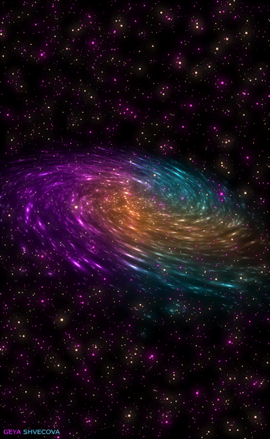
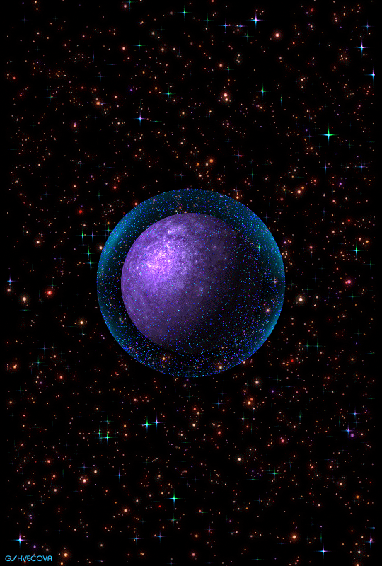

A galxy foi criada por amantes do universo, que se encantam cada vez mais com toda sua beleza e o quanto é desconhecida! Só conhecemos cerca de 4% da galáxia e ela ainda é um grande mistério para todos nós!
O principal objetivo da galxy é informar todas as novas descobertas feitas com relação ao universo, cada novo registro recebido pelos satélites, novos estudos, pesquisas e qualquer tipo de curiosidade relevante para nos aproximarmos cada vez mais do desconhecido!
Aliás, Um pequeno passo para o homem é um grande salto para a humanidade!